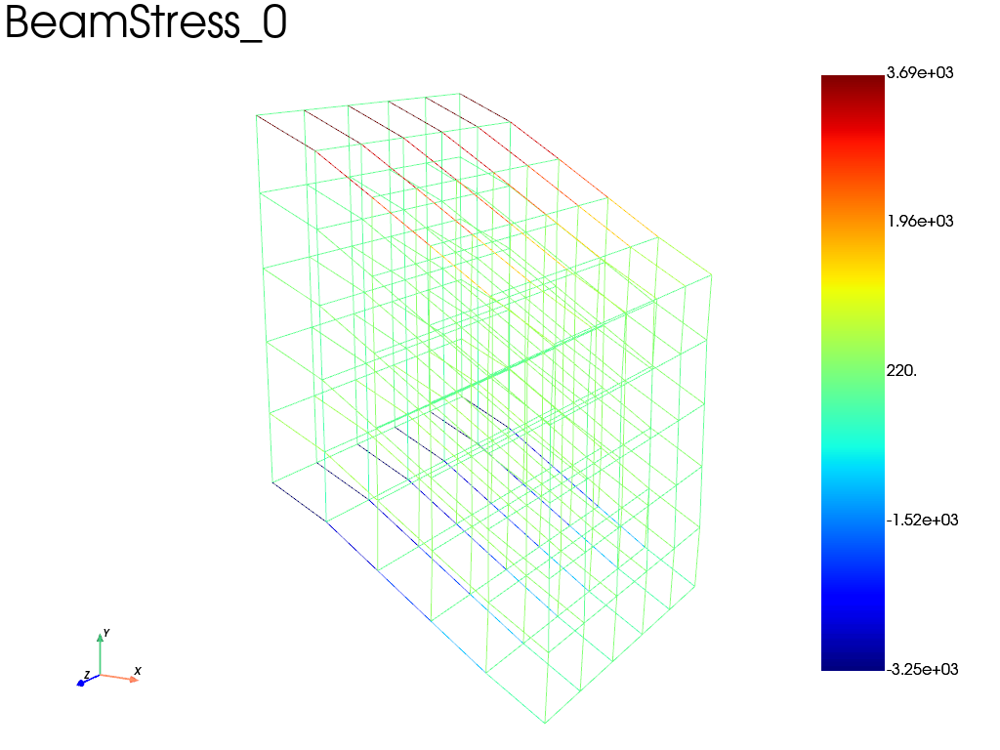

Note
Go to the end to download the full example code.
Beam Lattice Structure using beam model with geometric nonlinearities

Iter 1 - Time: 0.02000 - dt 0.02000 - NR iter: 3 - Err: 0.00000
Iter 2 - Time: 0.04000 - dt 0.02500 - NR iter: 2 - Err: 0.00493
Iter 3 - Time: 0.06000 - dt 0.02500 - NR iter: 2 - Err: 0.00495
Iter 4 - Time: 0.08000 - dt 0.02500 - NR iter: 2 - Err: 0.00487
Iter 5 - Time: 0.10000 - dt 0.02500 - NR iter: 2 - Err: 0.00480
Iter 6 - Time: 0.12000 - dt 0.02500 - NR iter: 2 - Err: 0.00473
Iter 7 - Time: 0.14000 - dt 0.02500 - NR iter: 2 - Err: 0.00466
Iter 8 - Time: 0.16000 - dt 0.02500 - NR iter: 2 - Err: 0.00459
Iter 9 - Time: 0.18000 - dt 0.02500 - NR iter: 2 - Err: 0.00453
Iter 10 - Time: 0.20000 - dt 0.02500 - NR iter: 2 - Err: 0.00447
Iter 11 - Time: 0.22000 - dt 0.02500 - NR iter: 2 - Err: 0.00441
Iter 12 - Time: 0.24000 - dt 0.02500 - NR iter: 2 - Err: 0.00435
Iter 13 - Time: 0.26000 - dt 0.02500 - NR iter: 2 - Err: 0.00429
Iter 14 - Time: 0.28000 - dt 0.02500 - NR iter: 2 - Err: 0.00424
Iter 15 - Time: 0.30000 - dt 0.02500 - NR iter: 2 - Err: 0.00419
Iter 16 - Time: 0.32000 - dt 0.02500 - NR iter: 2 - Err: 0.00414
Iter 17 - Time: 0.34000 - dt 0.02500 - NR iter: 2 - Err: 0.00409
Iter 18 - Time: 0.36000 - dt 0.02500 - NR iter: 2 - Err: 0.00405
Iter 19 - Time: 0.38000 - dt 0.02500 - NR iter: 2 - Err: 0.00400
Iter 20 - Time: 0.40000 - dt 0.02500 - NR iter: 2 - Err: 0.00396
Iter 21 - Time: 0.42000 - dt 0.02500 - NR iter: 2 - Err: 0.00392
Iter 22 - Time: 0.44000 - dt 0.02500 - NR iter: 2 - Err: 0.00389
Iter 23 - Time: 0.46000 - dt 0.02500 - NR iter: 2 - Err: 0.00385
Iter 24 - Time: 0.48000 - dt 0.02500 - NR iter: 2 - Err: 0.00382
Iter 25 - Time: 0.50000 - dt 0.02500 - NR iter: 2 - Err: 0.00379
Iter 26 - Time: 0.52000 - dt 0.02500 - NR iter: 2 - Err: 0.00376
Iter 27 - Time: 0.54000 - dt 0.02500 - NR iter: 2 - Err: 0.00373
Iter 28 - Time: 0.56000 - dt 0.02500 - NR iter: 2 - Err: 0.00370
Iter 29 - Time: 0.58000 - dt 0.02500 - NR iter: 2 - Err: 0.00368
Iter 30 - Time: 0.60000 - dt 0.02500 - NR iter: 2 - Err: 0.00366
Iter 31 - Time: 0.62000 - dt 0.02500 - NR iter: 2 - Err: 0.00364
Iter 32 - Time: 0.64000 - dt 0.02500 - NR iter: 2 - Err: 0.00362
Iter 33 - Time: 0.66000 - dt 0.02500 - NR iter: 2 - Err: 0.00360
Iter 34 - Time: 0.68000 - dt 0.02500 - NR iter: 2 - Err: 0.00359
Iter 35 - Time: 0.70000 - dt 0.02500 - NR iter: 2 - Err: 0.00358
Iter 36 - Time: 0.72000 - dt 0.02500 - NR iter: 2 - Err: 0.00357
Iter 37 - Time: 0.74000 - dt 0.02500 - NR iter: 2 - Err: 0.00356
Iter 38 - Time: 0.76000 - dt 0.02500 - NR iter: 2 - Err: 0.00356
Iter 39 - Time: 0.78000 - dt 0.02500 - NR iter: 2 - Err: 0.00356
Iter 40 - Time: 0.80000 - dt 0.02500 - NR iter: 2 - Err: 0.00356
Iter 41 - Time: 0.82000 - dt 0.02500 - NR iter: 2 - Err: 0.00356
Iter 42 - Time: 0.84000 - dt 0.02500 - NR iter: 2 - Err: 0.00357
Iter 43 - Time: 0.86000 - dt 0.02500 - NR iter: 2 - Err: 0.00358
Iter 44 - Time: 0.88000 - dt 0.02500 - NR iter: 2 - Err: 0.00359
Iter 45 - Time: 0.90000 - dt 0.02500 - NR iter: 2 - Err: 0.00361
Iter 46 - Time: 0.92000 - dt 0.02500 - NR iter: 2 - Err: 0.00363
Iter 47 - Time: 0.94000 - dt 0.02500 - NR iter: 2 - Err: 0.00366
Iter 48 - Time: 0.96000 - dt 0.02500 - NR iter: 2 - Err: 0.00370
Iter 49 - Time: 0.98000 - dt 0.02500 - NR iter: 2 - Err: 0.00375
Iter 50 - Time: 1.00000 - dt 0.02500 - NR iter: 2 - Err: 0.00383
import fedoo as fd
import numpy as np
E = 1e5
nu = 0.3
radius = 1
k = 0.9 # reduce section. k=0 to neglect the shear effect
n = 6 # n_nodes
ndim = 3
if ndim == 2:
fd.ModelingSpace("2D")
else:
fd.ModelingSpace("3D")
material = fd.constitutivelaw.ElasticIsotrop(E, nu)
beam_props = fd.constitutivelaw.BeamCircular(material, radius, k=k)
# Extract a Lattice Mesh from a 3D mesh
if ndim == 2:
mesh = fd.mesh.extract_edges(
fd.mesh.rectangle_mesh(n, n, x_max=100, y_max=100, ndim=ndim)
)
else:
mesh = fd.mesh.extract_edges(
fd.mesh.box_mesh(n, n, n, x_max=100, y_max=100, z_max=100)
)
nodes_left = mesh.find_nodes("X", mesh.bounding_box.xmin)
nodes_right = mesh.find_nodes("X", mesh.bounding_box.xmax)
wf = fd.weakform.BeamEquilibrium(beam_props)
assembly = fd.Assembly.create(wf, mesh)
pb = fd.problem.NonLinear(assembly, nlgeom=True)
results = pb.add_output("test", assembly, ["Disp", "Rot", "BeamStress", "BeamStrain"])
pb.bc.add("Dirichlet", nodes_left, ["Disp", "Rot"], 0)
pb.bc.add("Dirichlet", nodes_right, "DispY", -50)
pb.set_nr_criterion("Displacement", tol=5e-3, max_subiter=10)
pb.nlsolve(dt=0.02, update_dt=True, print_info=1)
# Post treatment
results = pb.get_results(assembly, ["Disp", "Rot", "BeamStress"])
results.plot("BeamStress", 0)
Total running time of the script: (0 minutes 3.116 seconds)